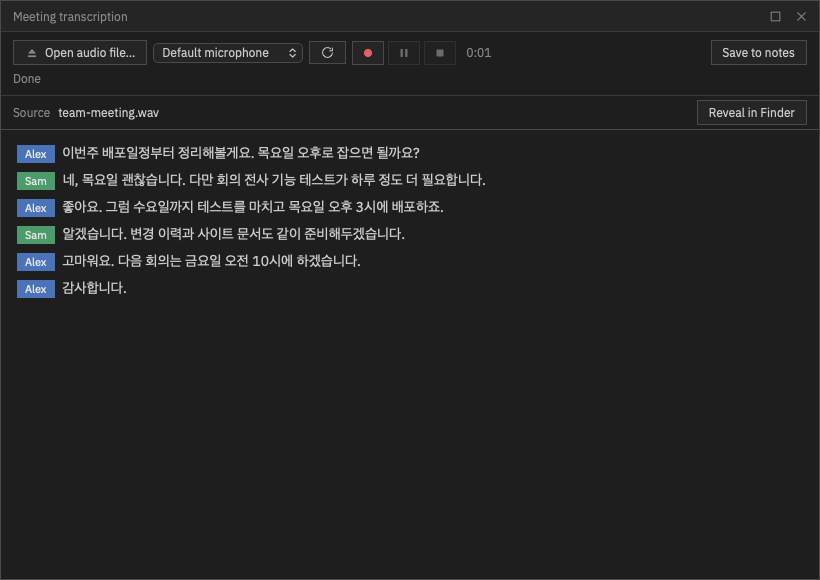
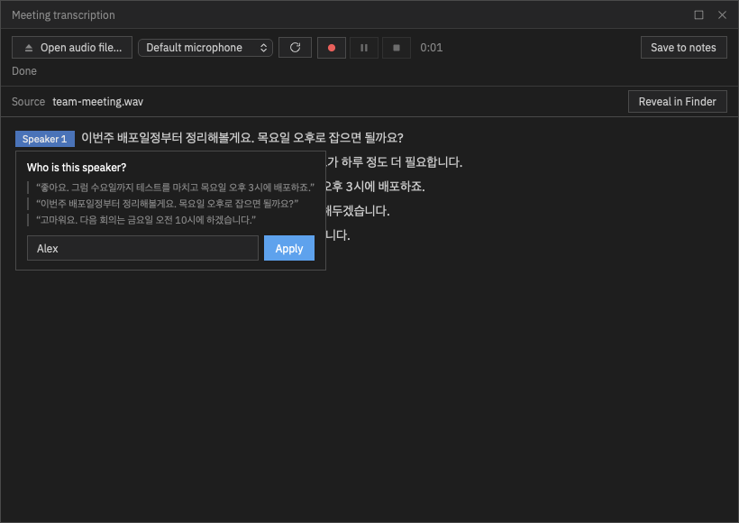
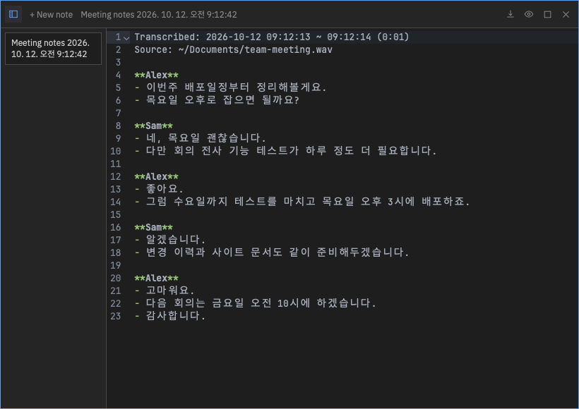

Core features · Meeting transcription
Meeting transcription
Transcribe a recording or a live microphone entirely on your device. While recording you see live captions; when you stop, the whole recording is transcribed again for accuracy and speakers are separated. Save the result as a note and hand it straight to an in-app AI for a summary or to-dos.
Open the meeting window
Open it with the Meeting transcription (microphone) icon in the titlebar or "Meeting transcription" in the command palette. It is a floating window like Notes — drag it, resize it from the edges, or maximize it.
- Transcription keeps running when you close the window. While it runs, the microphone icon shows a red dot, and reopening the window shows everything where you left it.
- With the Notes window open too, the window you click or select with the keyboard comes to the front.
First use — download the speech models
All speech recognition happens on your device and audio never leaves the machine, so the speech models are downloaded once on first use — click Download models in the window (progress is shown; files are checked by size and checksum).
Speech recognition currently supports Korean only.
| Platform | First download | Notes |
|---|---|---|
| macOS (Apple Silicon) | about 880MB | Uses the GPU (Metal) to run a large model (whisper large-v3-turbo) for the best quality. macOS 13.3 or later |
| Windows (x64) | about 1.75GB | Runs on the CPU. Live captions use Nemotron 3.5; the post-stop correction uses a whisper model (accuracy models included) |
On Windows, if you downloaded the models in an earlier version, meetings still start as before. When the status line shows a "Get accuracy models (about 1.26GB)" link, click it to get the extra models — live captions and the post-stop correction become more accurate.
Transcribe a recording
Choose a file with Open audio file…. It reads wav, mp3, m4a, caf, flac and more, including iPhone voice memos (m4a). Files are transcribed with the high-accuracy model from the start, and speakers are separated when it finishes.

Transcribe from a microphone
-
Pick a microphone and start
Pick an input device from the microphone list (Default microphone; refresh the list after plugging in a new device) and click Record from microphone. Recording starts immediately; for the few seconds the caption engine needs to load, the window shows "● Recording — preparing captions…" (nothing said in the meantime is lost).
-
Works like a recorder
Use the record · pause/resume · stop keys and the elapsed-time display. Nothing is captured while paused — neither in the captions nor in the recording file.
-
Stopping re-transcribes the whole recording
When you stop, the window shows "Finalizing…", transcribes the whole recording again with a more accurate model to replace the live captions, and then confirms speakers. Even if the live captions were sparse, this step fills in the transcript.
The microphone recording is saved as a wav file; open it in Finder/Explorer from the Source row in the window.
Speakers and renaming
When transcription finishes, speakers are separated automatically (up to 8; during recording they are estimates). Click a speaker chip (Speaker 1, Speaker 2…) to get "Who is this speaker?", type a name and click Apply — every line from that person changes at once. Names given during recording carry over when speakers are confirmed at the end.

Save the transcript as a note
Click Save to notes to save the transcript as a text memo in the Notes panel and open the panel (nothing is saved automatically). If you rename a speaker after saving, the note is updated too.

A name line appears whenever the speaker changes, and each sentence gets its own line. For microphone recordings, the length in parentheses excludes paused time. After saving, ask an in-app AI "summarize this meeting and create to-dos" to carry it through to the task board.
Troubleshooting
- "No sound is coming from the microphone" — check Orch term's microphone permission and the input device in your OS privacy settings (macOS: System Settings › Privacy & Security › Microphone).
- Few live captions, then everything appears after stopping — this happens when the input is too quiet (far from the microphone or low input volume) or with speakerphones that apply strong noise suppression. The post-stop re-transcription fills in the transcript, but moving the microphone closer or raising the input volume improves the live captions too.
- If you quit the app during a meeting, only the microphone wav is saved and post-processing such as speaker confirmation is skipped. Save the transcript as a note before quitting.